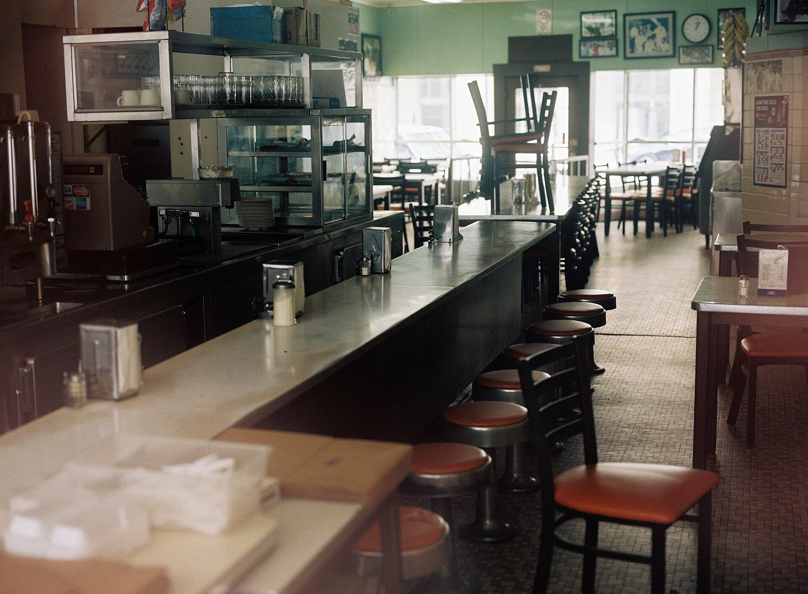
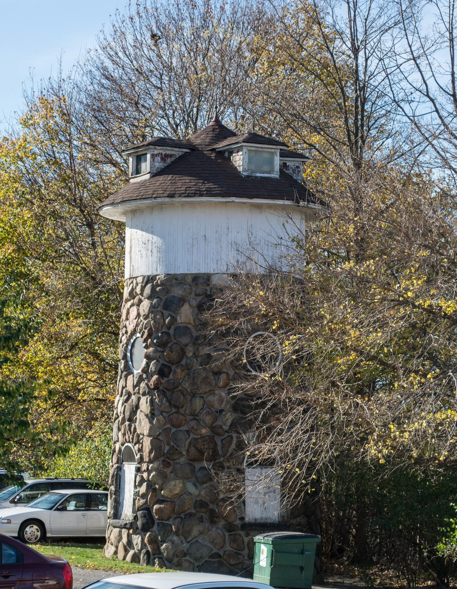

Story
Two friends,
one diner
The Gateway Diner was founded by two girls who became good friends, which then soon formed a family. Being so close, they decided to follow their dreams and take a crazy journey opening up The Gateway Diner.
This cozy place is all about casual comfort, honest cooking and an enjoyable atmosphere to laugh, talk and meet new friends. Loved by the locals and travelers from all around.
- Breakfast
- All day, every day
- Burgers
- Hand pressed daily
- Order
- Online via Toast

